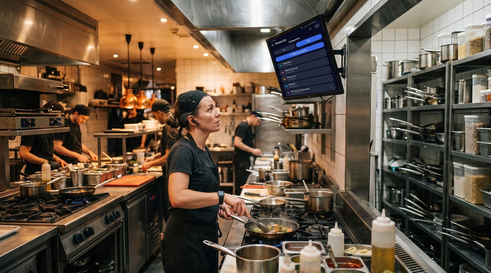

Quelle caisse enregistreuse pour un restaurant ?
En restauration, la caisse n'est pas juste un tiroir-caisse : c'est le cœur du service. Une mauvaise solution, et ce sont des tables mal suivies, des erreurs en cuisine et des files d'attente. Voici les fonctions vraiment indispensables, et comment choisir sans vous tromper.

Les 5 fonctions indispensables en restauration
① Le plan de salle interactif
Visualiser les tables, savoir lesquelles sont occupées, transférer un client d'une table à l'autre, fusionner des additions : sans plan de salle, le service devient vite ingérable en coup de feu.
② L'envoi en cuisine (écran ou impression)
La commande prise en salle doit partir automatiquement vers la cuisine ou le bar. Un système d'affichage de préparation évite les tickets papier perdus et les erreurs.
③ Le mode hors ligne
Un soir de rush, le Wi-Fi sature ou tombe. Une caisse qui s'arrête, c'est le service à l'arrêt. Exigez un vrai mode hors ligne avec synchronisation automatique au retour du réseau.
④ La gestion fine des employés
Chaque serveur sa session, des permissions par rôle, et des rapports par employé : indispensable pour suivre les ventes et limiter les erreurs de caisse.
⑤ Les réservations et le suivi des stocks
Gérer les réservations avec rappels, suivre les lots et les dates de péremption pour les denrées : ces modules font gagner un temps précieux et réduisent les pertes.
Une caisse pensée pour la restauration
Plan de salle, envoi en cuisine, mode hors ligne, multi-devises, gratuit à vie, prêt en 5 minutes.
Découvrir digabloPosRestaurant, bar, café, food truck : ce qui change
- Restaurant à table : priorité au plan de salle, à l'envoi en cuisine et à la gestion des additions partagées.
- Bar : rapidité d'encaissement, gestion des tournées, ouverture/fermeture de notes.
- Café / salon de thé : rapidité au comptoir, fidélité, suivi des produits frais.
- Food truck : mobilité, mode hors ligne impératif (réseau instable), encaissement express.
Combien ça coûte vraiment ?
Le piège classique : une caisse « gratuite » qui prélève une commission sur chaque paiement par carte. Pour un restaurant qui encaisse plusieurs centaines d'euros par jour, ces frais représentent vite des centaines d'euros par mois. Préférez une solution sans commission imposée, où vous ne payez que les modules réellement utilisés.
→ Estimez votre coût avec notre calculateur
Notre recommandation
Pour un établissement de restauration, visez une caisse qui réunit plan de salle natif, envoi en cuisine, mode hors ligne et zéro commission imposée, avec des modules à activer selon vos besoins. C'est le profil de digabloPos, en tête de notre comparatif des caisses gratuites 2026, particulièrement adapté aux restaurants, bars et cafés.
- Gestion des ardoises / crédit client
- Prête pour la facturation électronique
- Certifiée NF525
Prêt pour le prochain service ?
Installez votre caisse restaurant gratuitement, sans engagement.
Créer ma caisse resto gratuite, 5 min